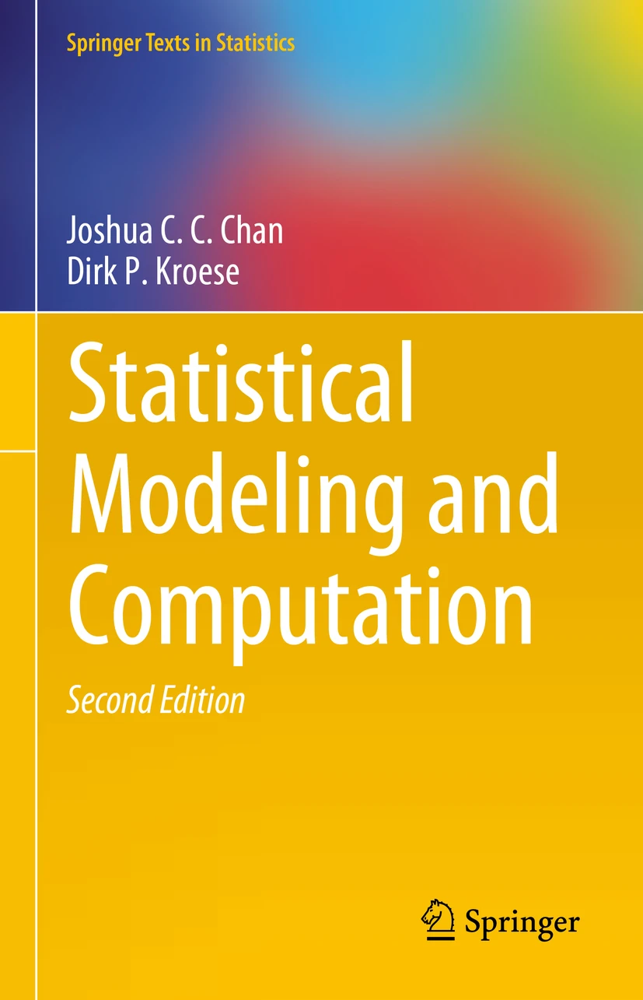
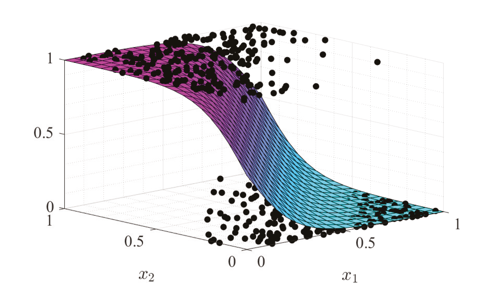

Statistical Modeling and Computation


This homepage accompanies the book:
J.C.C. Chan and D.P. Kroese Statistical Modeling and
Computation,
Second Edition, Springer Texts in Statistics, Springer, 2025.
Order information: Springer
|
To Dirk Kroese's homepage